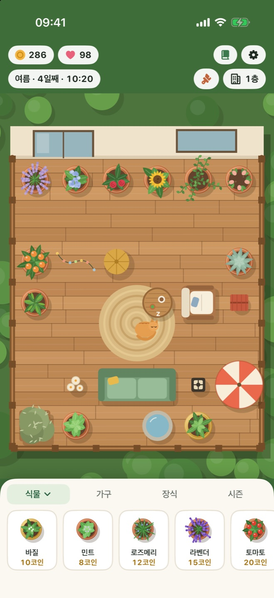
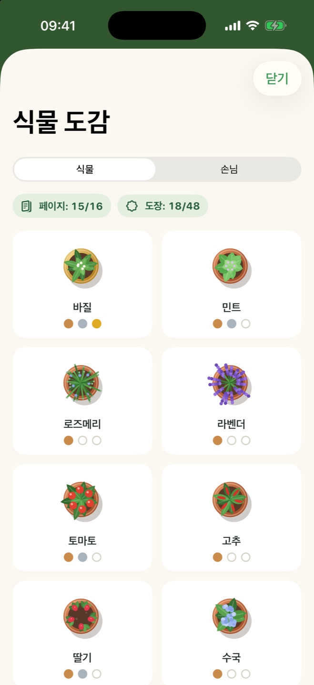
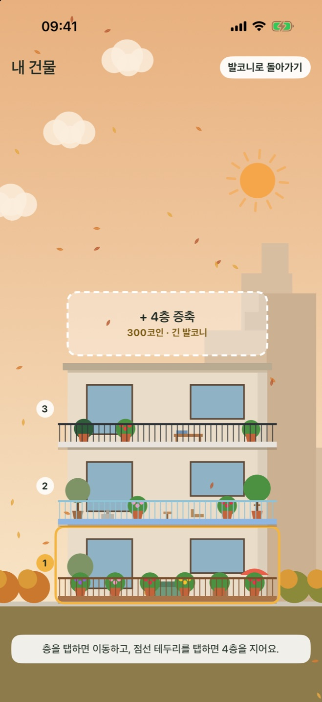

실시간으로 자라요
게임 속 하루는 실제 1시간이에요. 하루 틈틈이 짧고 편안하게 들르면 언제나 뭔가 자라 있어요.
iPhone 및 iPad용
허브와 꽃, 과일을 심고, 발코니를 꾸미고, 계절을 따라가며 깃털 달린 손님과 털복숭이 손님을 맞이하세요. 매일을 위한 작은 휴식.
식물을 발코니로 끌어다 놓고, 목마를 때 물을 주고, 다 익으면 수확하세요.
소파, 랜턴, 분수와 새 바닥을 놓아 보세요. 아늑한 발코니일수록 더 많이 벌고 손님도 더 많이 와요.
앱을 닫아도 정원은 계속 자라요. 잊어버린 식물도 절대 죽지 않고 물을 기다릴 뿐이에요.
편안한 하루 루틴에 필요한 건 다 있고, 재촉하는 건 하나도 없어요.
게임 속 하루는 실제 1시간이에요. 하루 틈틈이 짧고 편안하게 들르면 언제나 뭔가 자라 있어요.
봄비가 식물에 물을 주고, 여름 햇살이 토마토를 익히고, 가을엔 낙엽이 날리고, 겨울엔 난간에 눈이 쌓여요.
가구와 장식을 격자에 배치하고, 바닥을 나무 데크·대리석·모자이크로, 난간도 새것으로 바꿔 보세요.
나비, 꿀벌, 부엉이, 다람쥐, 이웃집 고양이들이 놀러 와요. 각자 좋아하는 걸 알아내면 고양이가 이사 올지도 몰라요.
식물 도감을 성장 단계와 수확 도장으로 채우고, 완성하면 특별한 레몬 나무가 열려요.
코인을 모아 저마다 다른 모양의 발코니가 있는 층을 올리고, 계절 따라 변하는 건물을 감상하세요.



하나의 무료 다운로드로 둘 다 즐겨요. iPad에서는 발코니가 넓어지고 동네도 더 많이 보여요.
어떤 화면에서든 발코니는 가운데에, 정원은 상태 막대 주변 가장자리까지 이어져요.
| iPhone | iOS 17 이상 |
|---|---|
| iPad | iPadOS 17 이상 |
| iPhone Duo | 지원 |
| 가격 | 무료. 광고와 앱 내 구입이 없어요. |
|---|---|
| 계정 | 필요 없어요. 오프라인으로 플레이해요. |
| 진행 상황 | 기기에 저장돼요. |
Balcony Bloom에는 서버도, 분석도, 광고도 없어요. 게임에서 하는 어떤 일도 개발자에게 전달되지 않아요. 개인정보 처리방침 읽기